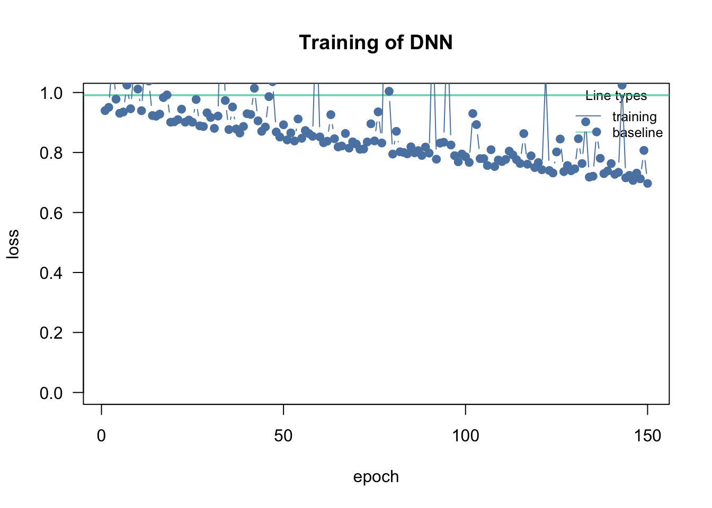
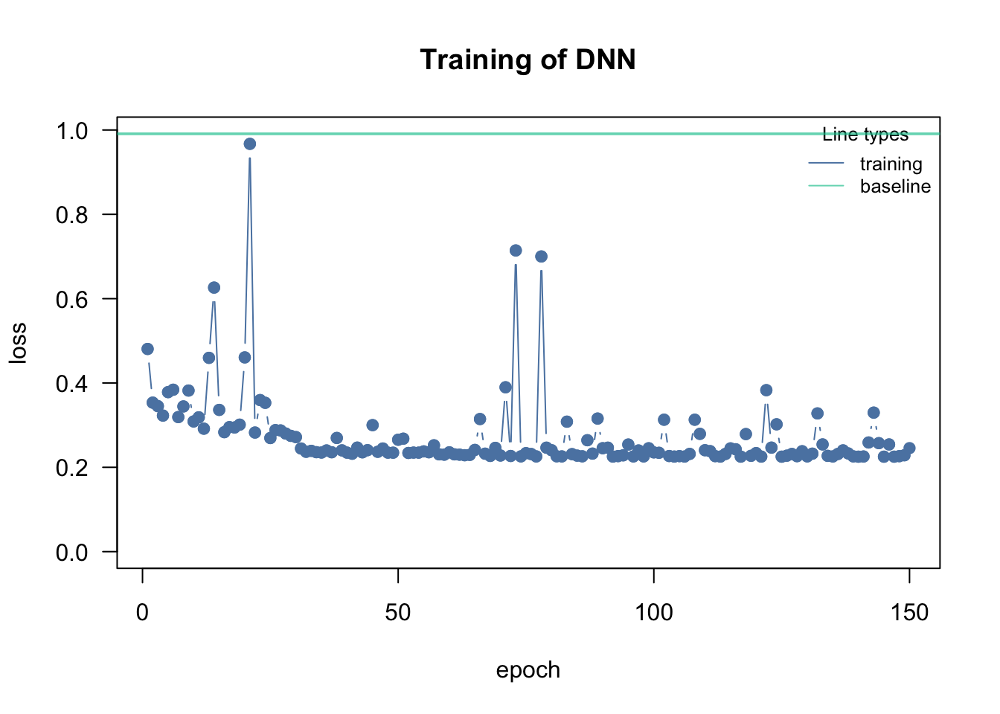
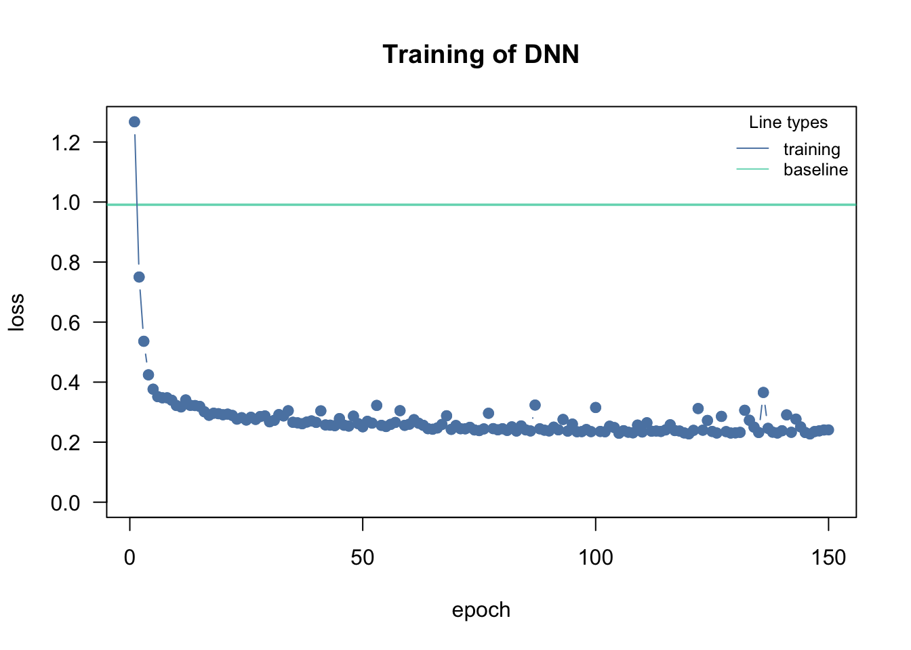
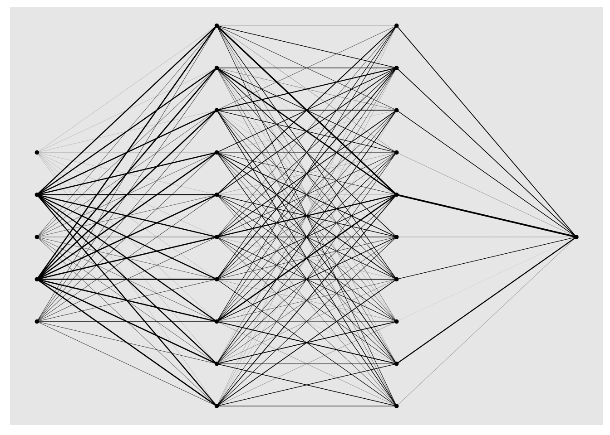
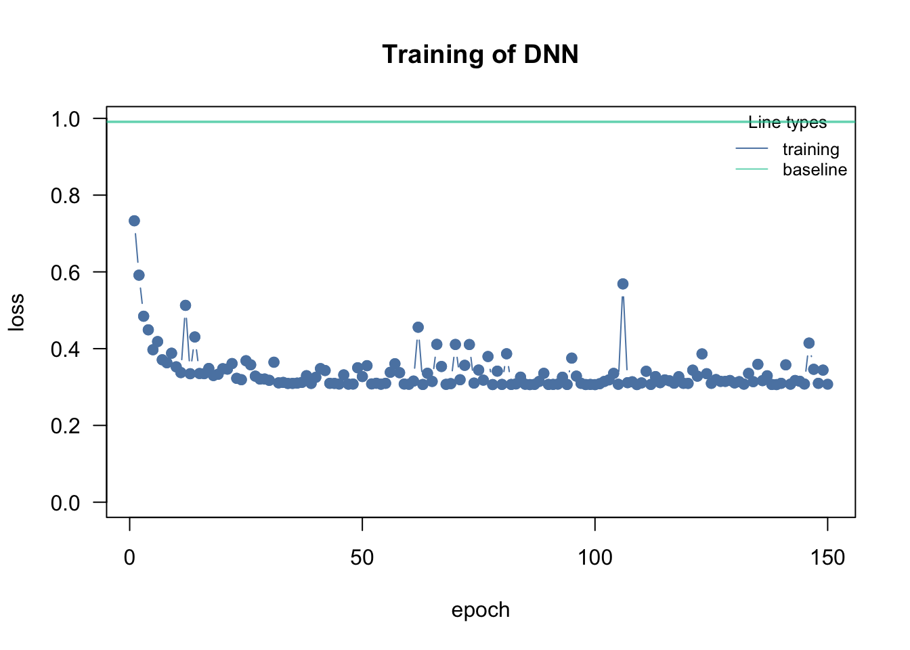
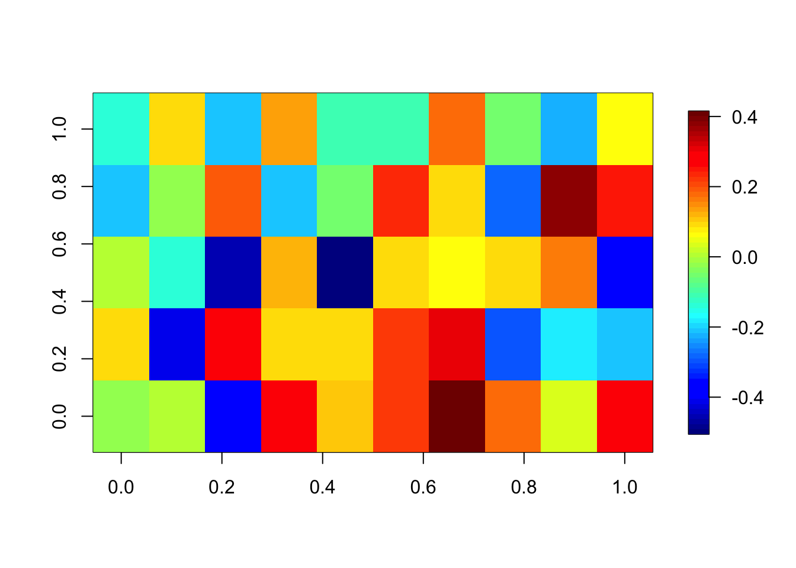

library(cito)7 Artificial Neural Networks
Artificial neural networks are biologically inspired, the idea is that inputs are processed by weights, the neurons, the signals then accumulate at hidden nodes (axioms), and only if the sum of activations of several neurons exceed a certain threshold, the signal will be passed on.
7.1 Fitting (deep) neural networks with the cito package
Deep neural networks are currently the state of the art in unsupervised learning. Their ability to model different types of data (e.g. graphs, images) is one of the reasons for their rise in recent years. However, requires extensive (programming) knowledge of the underlying deep learning frameworks (e.g. TensorFlow or PyTorch), which we will teach you in two days. For tabular data, we can use packages like cito, which work similarly to regression functions like lm and allow us to train deep neural networks in one line of code:
library(cito)
nn.fit<- dnn(Species~., data = datasets::iris, loss = "softmax", verbose = FALSE, plot = FALSE)Registered S3 methods overwritten by 'reformulas':
method from
head.call cito
head.formula cito
head.name citocito also supports many of the S3 methods that are available for statistical models, e.g. the summary function:
summary(nn.fit)Summary of Deep Neural Network Model
Feature Importance:
variable importance_1
1 Sepal.Length 2.0135627
2 Sepal.Width 0.3881758
3 Petal.Length 57.4453075
4 Petal.Width 8.8662025
Average Conditional Effects:
Response_1 Response_2 Response_3
Sepal.Length 0.001740740 0.09696308 -0.09870383
Sepal.Width 0.005959444 0.08550611 -0.09146560
Petal.Length -0.010114889 -0.16116845 0.17128332
Petal.Width -0.003884740 -0.15646446 0.16034916
Standard Deviation of Conditional Effects:
Response_1 Response_2 Response_3
Sepal.Length 0.002845965 0.2046339 0.2040900
Sepal.Width 0.010319865 0.1897926 0.1872739
Petal.Length 0.017566113 0.3431444 0.3386977
Petal.Width 0.006534681 0.3230867 0.3216403Variable importance can also be computed for non-tree algorithms (although it is slightly different, more on that on Thursday). The feature importance reports the importance of the features for distinguishing the three species, the average conditional effects are an approximation of the linear effects, and the standard deviation of the conditional effects is a measure of the non-linearity of these three variables.
7.2 Loss
Tasks such as regression and classification are fundamentally different; the former has continuous responses, while the latter has a discrete response. In ML algorithms, these different tasks can be represented by different loss functions (Classical ML algorithms also use loss functions but often they are automatically inferred, also neural networks are much more versatile, supporting more loss functions). Moreover, the tasks can differ even within regression or classification (e.g., in classification, we have binary classification (0 or 1) or multi-class classification (0, 1, or 2)). As a result, especially in DL, we have different specialized loss functions available for specific response types. The table below shows a list of supported loss functions in cito:
| Loss | Type | Example |
|---|---|---|
| mse (mean squared error) | Regression | Numeric values |
| mae (mean absolute error) | Regression | Numeric values, often used for skewed data |
| softmax | Classification, multi-label | Species |
| cross-entropy | Classification, binary or multi-class | Survived/non-survived, Multi-species/communities |
| binomial | Classification, binary or multi-class | Binomial likelihood |
| poisson | Regression | Count data |
In the iris data, we model Species which has 3 response levels, so this is was what we call multilabel and it requires a softmax link and a cross-entropy loss function, in cito we specify that by using the softmax loss:
library(cito)
model<- dnn(Species~., data = datasets::iris, loss = "softmax", verbose = FALSE)
head(predict(model, type = "response")) setosa versicolor virginica
[1,] 0.9961839 0.003816093 7.483015e-10
[2,] 0.9940717 0.005928292 2.009312e-09
[3,] 0.9947681 0.005231898 1.711567e-09
[4,] 0.9896803 0.010319617 5.998502e-09
[5,] 0.9959870 0.004012955 8.361553e-10
[6,] 0.9935879 0.006412113 1.737870e-097.3 Validation split in deep learning
In cito, we can directly tell the dnn function to automatically use a random subset of the data as validation data, which is validated after each epoch (each iteration of the optimization), allowing us to monitor but also to invervene in the training:
data = airquality[complete.cases(airquality),] # DNN cannot handle NAs!
data = scale(data)
model = dnn(Ozone~.,
validation = 0.2,
loss = "mse",data = data, verbose = FALSE)
The validation argument ranges from 0 and 1 is the percent of the data that should be used for validation
Warning
The validation split in deep neural networks/ cito is part of the training! It should be not used to validate the model at all. Later on, we will introduce techniques that use the validation data during the training to improve the training itself!
7.3.1 Baseline loss
Since training DNNs can be quite challenging, we provide in cito a baseline loss that is computed from an intercept-only model (e.g., just the mean of the response). And the absolute minimum performance our DNN should achieve is to outperform the baseline model!
7.4 Trainings parameter
In DL, the optimization (the training of the DNN) is challenging as we have to optimize up to millions of parameters (which are not really identifiable, it is accepted that the optimization does not find a global minimum but just a good local minimum). We have a few important hyperparameters that affect only the optimization:
| Hyperparameter | Meaning | Range |
|---|---|---|
| learning rate | the step size of the parameter updating in the iterative optimization routine, if too high, the optimizer will step over good local optima, if too small, the optimizer will be stuck in a bad local optima | [0.00001, 0.5] |
| batch size | NNs are optimized via stochastic gradient descent, i.e. only a batch of the data is used to update the parameters at a time | Depends on the data: 10-250 |
| epoch | the data is fed into the optimization in batches, once the entire data set has been used in the optimization, the epoch is complete (so e.g. n = 100, batch size = 20, it takes 5 steps to complete an epoch) | 100+ (use early stopping) |
7.4.1 Learning rate
cito visualizes the training (see graphic). The reason for this is that the training can easily fail if the learning rate (lr) is poorly chosen. If the lr is too high, the optimizer “jumps” over good local optima, while it gets stuck in local optima if the lr is too small:
model = dnn(Ozone~.,
hidden = c(10L, 10L),
activation = c("selu", "selu"),
loss = "mse", lr = 0.4, data = data, epochs = 150L, verbose = FALSE)If too high, the training will either directly fail (because the loss jumps to infinity) or the loss will be very wiggly and doesn’t decrease over the number of epochs.
model = dnn(Ozone~.,
hidden = c(10L, 10L),
activation = c("selu", "selu"),
loss = "mse", lr = 0.0001, data = data, epochs = 150L, verbose = FALSE)
If too low, the loss will be very wiggly but doesn’t decrease.
Learning rate scheduler
Adjusting / reducing the learning rate during training is a common approach in neural networks. The idea is to start with a larger learning rate and then steadily decrease it during training (either systematically or based on specific properties):
model = dnn(Ozone~.,
hidden = c(10L, 10L),
activation = c("selu", "selu"),
loss = "mse",
lr = 0.1,
lr_scheduler = config_lr_scheduler("step", step_size = 30, gamma = 0.1),
# reduce learning all 30 epochs (new lr = 0.1* old lr)
data = data, epochs = 150L, verbose = FALSE)
7.5 Architecture
The architecture of the NN can be specified by the hidden argument, it is a vector where the length corresponds to the number of hidden layers and value of entry to the number of hidden neurons in each layer (and the same applies for the activation argument that specifies the activation functions in the hidden layers). It is hard to make recommendations about the architecture, a kind of general rule is that the width of the hidden layers is more important than the depth of the NN.
Example:
data = airquality[complete.cases(airquality),] # DNN cannot handle NAs!
data = scale(data)
model = dnn(Ozone~.,
hidden = c(10L, 10L), # Architecture, number of hidden layers and nodes in each layer
activation = c("selu", "selu"), # activation functions for the specific hidden layer
loss = "mse", lr = 0.01, data = data, epochs = 150L, verbose = FALSE)
plot(model)
summary(model)Summary of Deep Neural Network Model
Feature Importance:
variable importance_1
1 Solar.R 0.30079659
2 Wind 1.61965306
3 Temp 2.55168380
4 Month 0.08085402
5 Day 0.06748315
Average Conditional Effects:
Response_1
Solar.R 0.16805675
Wind -0.36163790
Temp 0.49297271
Month -0.06931832
Day 0.05578145
Standard Deviation of Conditional Effects:
Response_1
Solar.R 0.08187498
Wind 0.27420634
Temp 0.31168410
Month 0.05047483
Day 0.041481927.6 Regularization
We can use \(\lambda\) and \(\alpha\) to set L1 and L2 regularization on the weights in our NN:
model = dnn(Ozone~.,
hidden = c(10L, 10L),
activation = c("selu", "selu"),
loss = "mse",
lr = 0.01,
lambda = 0.01, # regularization strength
alpha = 0.5,
lr_scheduler = config_lr_scheduler("step", step_size = 30, gamma = 0.1),
# reduce learning all 30 epochs (new lr = 0.1* old lr)
data = data, epochs = 150L, verbose = FALSE)
summary(model)Summary of Deep Neural Network Model
Feature Importance:
variable importance_1
1 Solar.R 0.18650267
2 Wind 0.75931059
3 Temp 1.78395042
4 Month 0.09719629
5 Day 0.05360434
Average Conditional Effects:
Response_1
Solar.R 0.12809294
Wind -0.33347336
Temp 0.51551464
Month -0.11334142
Day 0.07194399
Standard Deviation of Conditional Effects:
Response_1
Solar.R 0.05029027
Wind 0.04945278
Temp 0.10737959
Month 0.03440912
Day 0.03606685Be careful that you don’t accidentally set all weights to 0 because of a too high regularization. We check the weights of the first layer:
fields::image.plot(coef(model)[[1]][[1]]) # weights of the first layer
7.7 Hyperparameter tuning
cito has a feature to automatically tune hyperparameters under Cross Validation!
- if you pass the function
tune(...)to a hyperparameter, this hyperparameter will be automatically tuned - in the
tuning = config_tuning(...)argument, you can specify the cross-validation strategy and the number of hyperparameters that shoudl be tested - after the tuning, cito will fit automatically a model with the best hyperparameters on the full data and will return this model
Minimal example with the iris dataset:
df = iris
df[,1:4] = scale(df[,1:4])
model_tuned = dnn(Species~.,
loss = "softmax",
data = iris,
lambda = tune(lower = 0.0, upper = 0.2), # you can pass the "tune" function to a hyerparameter
tuning = config_tuning(CV = 3, steps = 20L),
verbose = FALSE
)Starting hyperparameter tuning...
Fitting final model...# tuning results
model_tuned$tuning# A tibble: 20 × 5
steps test train models lambda
<int> <dbl> <dbl> <lgl> <dbl>
1 1 65.9 0 NA 0.0645
2 2 72.2 0 NA 0.0673
3 3 168. 0 NA 0.145
4 4 75.7 0 NA 0.0750
5 5 168. 0 NA 0.194
6 6 168. 0 NA 0.173
7 7 86.3 0 NA 0.110
8 8 84.2 0 NA 0.104
9 9 13.0 0 NA 0.000325
10 10 56.3 0 NA 0.0441
11 11 122. 0 NA 0.131
12 12 144. 0 NA 0.139
13 13 76.9 0 NA 0.0826
14 14 95.4 0 NA 0.121
15 15 168. 0 NA 0.133
16 16 150. 0 NA 0.145
17 17 83.5 0 NA 0.105
18 18 58.8 0 NA 0.0472
19 19 168. 0 NA 0.199
20 20 78.8 0 NA 0.0803 # model_tuned is now already the best model!7.8 Exercise
Question: Hyperparameter tuning dnn - Titanic dataset
Tune architecture
- Tune training parameters (learning rate, batch size) and regularization (lambda and alpha)
Hints
cito can automatically tune hyperparameters under Cross Validation!
- passing
tune(...)to a hyperparameter will tell cito to tune this specific hyperparameter - the
tuning = config_tuning(...)let you specify the cross-validation strategy and the number of hyperparameters that should be tested (steps = number of hyperparameter combinations that should be tried) - after tuning, cito will fit automatically a model with the best hyperparameters on the full data and will return this model
Minimal example with the iris dataset:
library(cito)
df = iris
df[,1:4] = scale(df[,1:4])
model_tuned = dnn(Species~.,
loss = "softmax",
data = iris,
lambda = tune(lower = 0.0, upper = 0.2), # you can pass the "tune" function to a hyerparameter
tuning = config_tuning(CV = 3, steps = 20L),
burnin = Inf
)
# tuning results
model_tuned$tuning
# model_tuned is now already the best model!library(EcoData)
library(dplyr)
library(missRanger)
data(titanic_ml)
data = titanic_ml
data =
data %>% select(survived, sex, age, fare, pclass)
data[,-1] = missRanger(data[,-1], verbose = 0)
data_sub =
data %>%
mutate(age = scales::rescale(age, c(0, 1)),
fare = scales::rescale(fare, c(0, 1))) %>%
mutate(sex = as.integer(sex) - 1L,
pclass = as.integer(pclass - 1L))
data_new = data_sub[is.na(data_sub$survived),] # for which we want to make predictions at the end
data_obs = data_sub[!is.na(data_sub$survived),] # data with known response
model = dnn(survived~.,
hidden = c(10L, 10L), # change
activation = c("selu", "selu"), # change
loss = "binomial",
lr = 0.05, #change
validation = 0.2,
lambda = 0.001, # change
alpha = 0.1, # change
burnin = Inf,
lr_scheduler = config_lr_scheduler("reduce_on_plateau", patience = 10, factor = 0.9),
data = data_obs, epochs = 40L, verbose = FALSE, plot= TRUE)
# Predictions:
predictions = predict(model, newdata = data_new, type = "response") # change prediction type to response so that cito predicts probabilities
write.csv(data.frame(y = predictions[,1]), file = "Max_titanic_dnn.csv")
Question: Hyperparameter tuning - Plant-pollinator dataset
The plant-pollinator database is a collection of plant-pollinator interactions with traits for plants and pollinators. The idea is pollinators interact with plants when their traits fit (e.g. the tongue of a bee needs to match the shape of a flower). We explored the advantage of machine learning algorithms over traditional statistical models in predicting species interactions in our paper. If you are interested you can have a look here.
see Section A.3 for more information about the dataset.
Prepare the data:
library(EcoData)
library(dplyr)
Attaching package: 'dplyr'The following objects are masked from 'package:stats':
filter, lagThe following objects are masked from 'package:base':
intersect, setdiff, setequal, uniondata(plantPollinator_df)
plant_poll = plantPollinator_df
summary(plant_poll) crop insect type
Vaccinium_corymbosum: 256 Andrena_wilkella : 80 Length:20480
Brassica_napus : 256 Andrena_barbilabris: 80 Class :character
Carum_carvi : 256 Andrena_cineraria : 80 Mode :character
Coriandrum_sativum : 256 Andrena_flavipes : 80
Daucus_carota : 256 Andrena_gravida : 80
Malus_domestica : 256 Andrena_haemorrhoa : 80
(Other) :18944 (Other) :20000
season diameter corolla colour
Length:20480 Min. : 2.00 Length:20480 Length:20480
Class :character 1st Qu.: 5.00 Class :character Class :character
Mode :character Median : 19.00 Mode :character Mode :character
Mean : 27.03
3rd Qu.: 25.00
Max. :150.00
NA's :9472
nectar b.system s.pollination inflorescence
Length:20480 Length:20480 Length:20480 Length:20480
Class :character Class :character Class :character Class :character
Mode :character Mode :character Mode :character Mode :character
composite guild tongue body
Length:20480 Length:20480 Min. : 2.000 Min. : 2.00
Class :character Class :character 1st Qu.: 4.800 1st Qu.: 8.00
Mode :character Mode :character Median : 6.600 Median :10.50
Mean : 8.104 Mean :10.66
3rd Qu.:10.500 3rd Qu.:13.00
Max. :26.400 Max. :25.00
NA's :17040 NA's :6160
sociality feeding interaction
Length:20480 Length:20480 0 :14095
Class :character Class :character 1 : 595
Mode :character Mode :character NA's: 5790
# scale numeric features
plant_poll[, sapply(plant_poll, is.numeric)] = scale(plant_poll[, sapply(plant_poll, is.numeric)])
# remove NAs
df = plant_poll[complete.cases(plant_poll),] # remove NAs
# remove factors with only one level
data_obs = df %>% select(-crop, -insect, -season, -colour, -guild, -feeding, -composite)
# change response to integer (because cito wants integer 0/1 for binomial data)
data_obs$interaction = as.integer(data_obs$interaction) - 1
# prepare the test data
newdata = plant_poll[is.na(plantPollinator_df$interaction), ]
newdata_imputed = missRanger::missRanger(data = newdata[,-ncol(newdata)], verbose = 0) # fill NAs
newdata_imputed$interaction = NAMinimal example in cito:
library(cito)
set.seed(42)
model = dnn(interaction~.,
hidden = c(50, 50),
activation = "selu",
loss = "binomial",
lr = tune(values = seq(0.0001, 0.03, length.out = 10)),
batchsize = 100L, # increasing the batch size will reduce the runtime
data = data_obs,
epochs = 200L,
burnin = Inf,
tuning = config_tuning(CV = 3, steps = 10))
print(model$tuning)
# make final predictions
predictions = predict(model, newdata_imputed, type = "response")[,1]
# prepare submissions
write.csv(data.frame(y = predictions), file = "my_submission.csv")Your Tasks:
- Use cito to tune learning parameters and the regularization
- Submit your predictions to http://rhsbio7.uni-regensburg.de:8500/
Minimal example:
library(cito)
set.seed(42)
model = dnn(interaction~.,
hidden = c(50, 50),
activation = "selu",
loss = "binomial",
lr = tune(values = seq(0.0001, 0.03, length.out = 10)),
lambda = tune(values = seq(0.0001, 0.1, length.out = 10)),
alpha = tune(),
batchsize = 100L, # increasing the batch size will reduce the runtime
data = data_obs,
epochs = 100L,
burnin = Inf,
tuning = config_tuning(CV = 3, steps = 15))Starting hyperparameter tuning...
Fitting final model...print(model$tuning)# A tibble: 15 × 7
steps test train models lambda alpha lr
<int> <dbl> <dbl> <lgl> <dbl> <dbl> <dbl>
1 1 393. 0 NA 0.0889 0.197 0.00674
2 2 355. 0 NA 0.1 0.501 0.0134
3 3 330. 0 NA 0.0334 0.825 0.0200
4 4 335. 0 NA 0.0112 0.0921 0.0134
5 5 339. 0 NA 0.0778 0.470 0.0234
6 6 331. 0 NA 0.0445 0.881 0.0134
7 7 357. 0 NA 0.0445 0.436 0.00674
8 8 339. 0 NA 0.0667 0.277 0.0200
9 9 607. 0 NA 0.1 0.0571 0.0001
10 10 322. 0 NA 0.0112 0.885 0.0234
11 11 333. 0 NA 0.0112 0.148 0.0234
12 12 344. 0 NA 0.0667 0.317 0.0167
13 13 336. 0 NA 0.0001 0.681 0.00342
14 14 600. 0 NA 0.1 0.283 0.0001
15 15 356. 0 NA 0.0556 0.425 0.0101 Make predictions:
predictions = predict(model, newdata_imputed, type = "response")[,1]
write.csv(data.frame(y = predictions), file = "Max_plant_.csv")